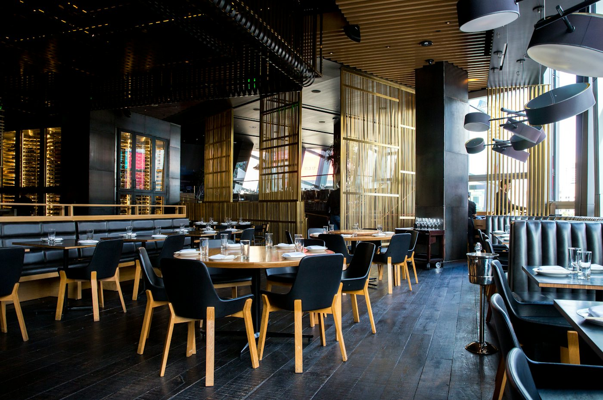

Paola Ferraro
Chef e sócia
Terceira geração da família. Formada em gastronomia em Bolonha, voltou para assumir a cozinha em 2015.
Desde 1974
A massa é aberta toda manhã, o pão sai do forno a lenha às onze e o molho cozinha por cinco horas na mesma panela de ferro desde 1974.

“Massa fresca, molho de panela e mesa farta”Vila Rica
Além do salão, a cozinha atende eventos, encomendas e entregas no bairro.
De terça a domingo, com pratos do dia e menu executivo nos dias úteis.
Cardápio completo, carta de vinhos e sobremesas feitas na casa.
Aniversários, confraternizações e jantares de empresa em salão reservado.
Massas frescas, molhos e sobremesas para levar, com um dia de antecedência.
Pedidos pelo WhatsApp, com entrega própria em um raio de cinco quilômetros.
Jantar para dois com entrada, prato, sobremesa e vinho.

A cozinha e o salão são tocados pela família, com uma equipe que está na casa há mais de dez anos.
Chef e sócia
Terceira geração da família. Formada em gastronomia em Bolonha, voltou para assumir a cozinha em 2015.
Salão e adega
Cuida do atendimento e da carta de vinhos, que troca a cada estação.

Mestre do forno
Há vinte e dois anos na casa. É dele o pão que chega à mesa.
Respondemos em poucos minutos. Para grupos acima de dez pessoas, fale com a gente com dois dias de antecedência.
EndereçoRua Treze de Maio, 1.208 — Bela Vista, São Paulo
AtendimentoTerça a sexta, 12h–15h · 19h–23h · Sábado, 12h–24h · Domingo, 12h–17h
Telefone(11) 3200-0000
E-mailreservas@restaurante.com.br